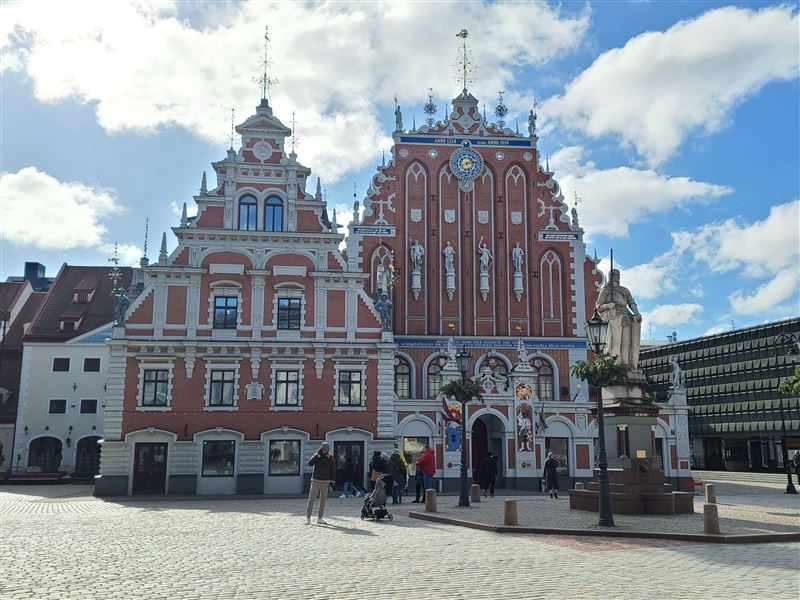
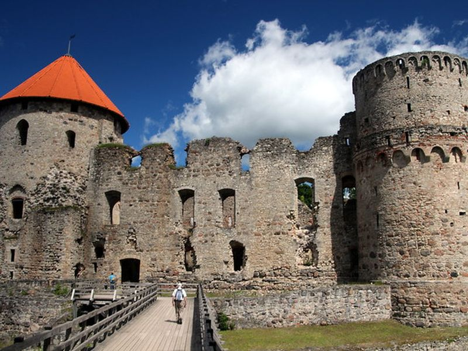
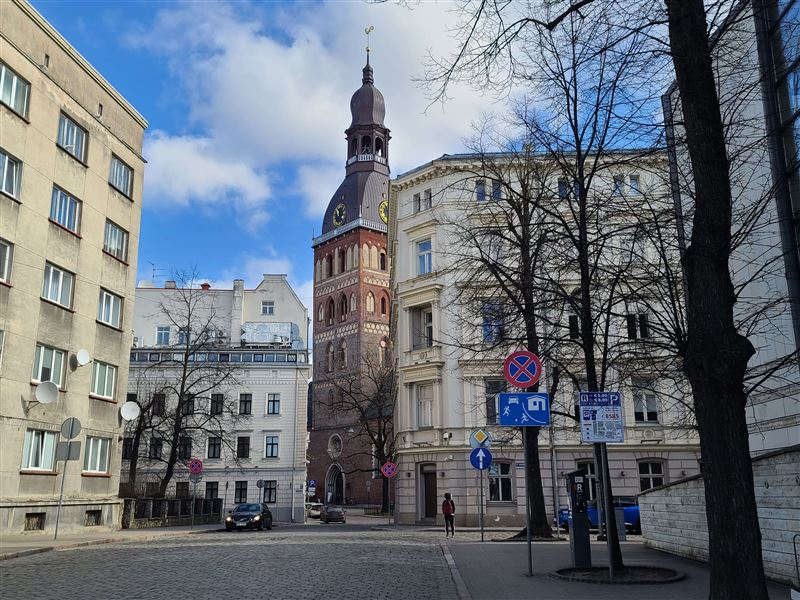
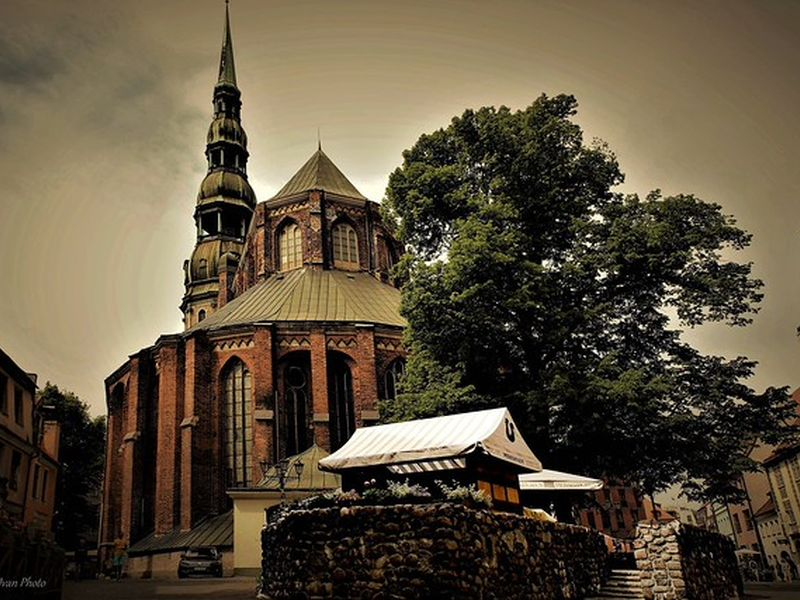
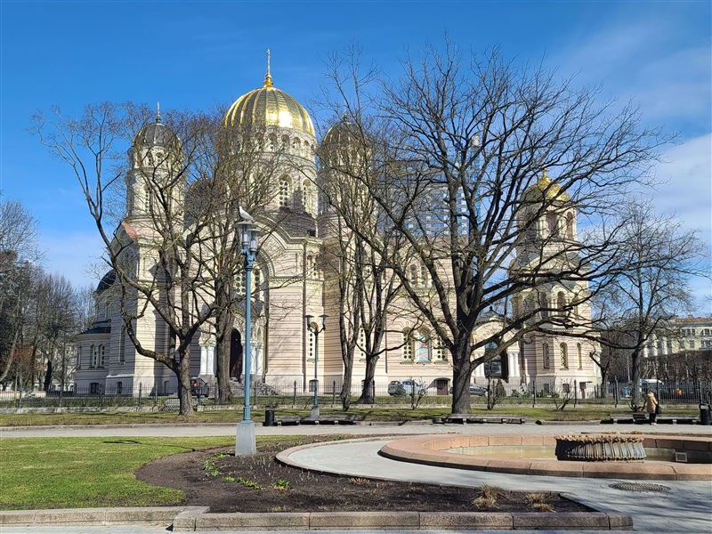
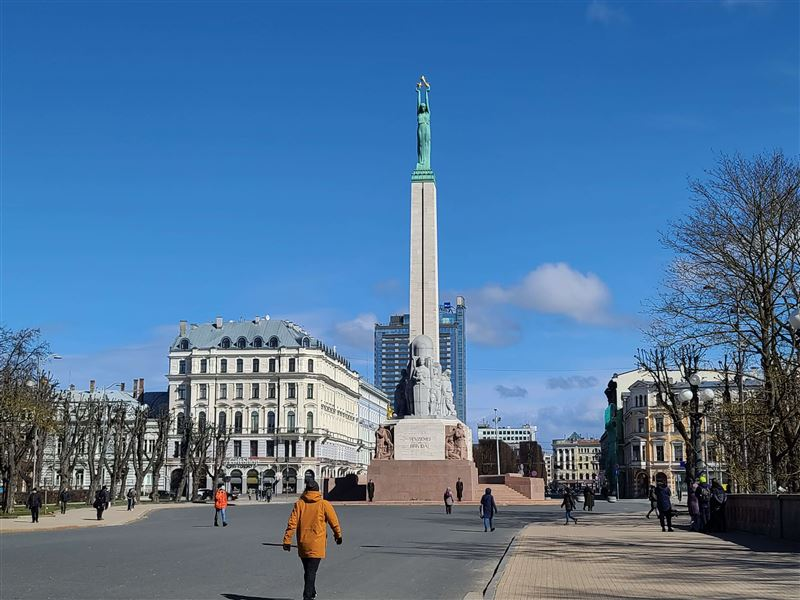
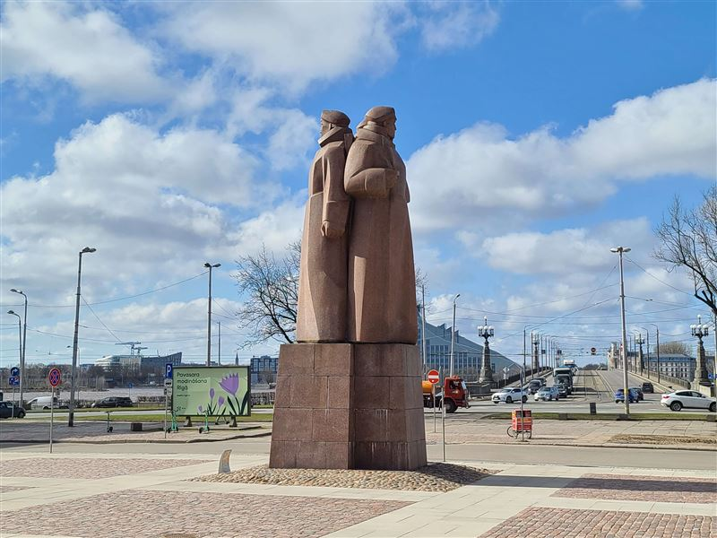

Explore Riga
A Brief History
Riga developed from a 12th-century bishopric and Hanseatic port on the Daugava, with merchant warehouses, guild halls, and church spires shaping the old town. Swedish, Polish-Lithuanian, Russian imperial, and independent Latvian rule each left churches, fortification traces, boulevards, and art-nouveau apartment blocks. The city suffered heavy damage in World War II and Soviet-era reconstruction altered parts of the center.
Attractions Map
Top Sights & Activities

House of the Black Heads
The House of the Black Heads served a brotherhood of unmarried German merchants in medieval Riga and became one of the symbols of the old town. The building was reconstructed after wartime destruction using historical documentation. Its ornate facade on Town Hall Square faces the central market space where guild ceremonies and civic events once took place.

Riga Castle
Riga Castle was founded in the 14th century for the Livonian Order and later served Swedish, Russian, and Latvian authorities. It remains one of the main state buildings on the Daugava waterfront. The castle complex houses the office of the president and museum spaces, linking medieval fortification with modern government on the riverbank.

Riga Cathedral
Riga Cathedral was founded in the early 13th century and rebuilt across later Gothic and Baroque phases. It remains one of the main ecclesiastical buildings of Latvia and is known for its organ and cloister. The cathedral anchors the old town's northern edge and preserves centuries of Lutheran and civic history in the former Hanseatic city.

St. Peter's Church
Saint Peter's Church developed as the parish church of Riga's old town and gained its tall spire through later rebuilding. The church and tower reflect the city's mercantile and Lutheran history. Visitors can climb the observation platform for views over the red rooftops, Town Hall Square, and the Daugava River.

Riga Nativity of Christ Orthodox Cathedral
The Nativity Cathedral was built in the late 19th century during the Russian imperial period and later restored after Soviet secular use. It remains the main Orthodox cathedral in Riga. Its golden domes and neo-Byzantine forms stand in Esplanade Park, marking the religious diversity of a city shaped by Baltic German, Latvian, and Russian communities.

The Freedom Monument
The Freedom Monument was unveiled in 1935 to commemorate Latvia's War of Independence. It became a central symbol of national statehood and public remembrance in Riga. The granite column and copper figure of Liberty stand on Brivibas Boulevard, where ceremonies and floral tributes mark national holidays and historical anniversaries.

Latvian Riflemen Monument
The monument to the Latvian Riflemen was unveiled in 1971 near Town Hall Square and reflects the contested memory of wartime military formations in Latvian and Soviet history. Its position marks an important public space in old Riga. The bronze group commemorates units that fought in World War I and later served in the Red Army during the Russian Civil War.